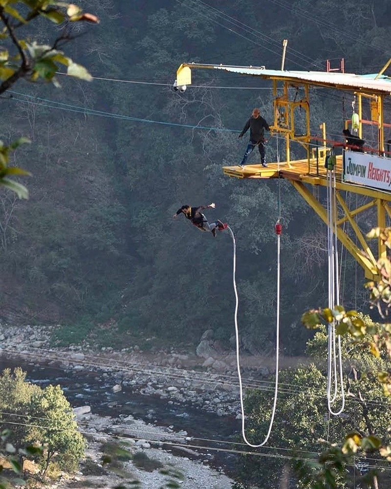
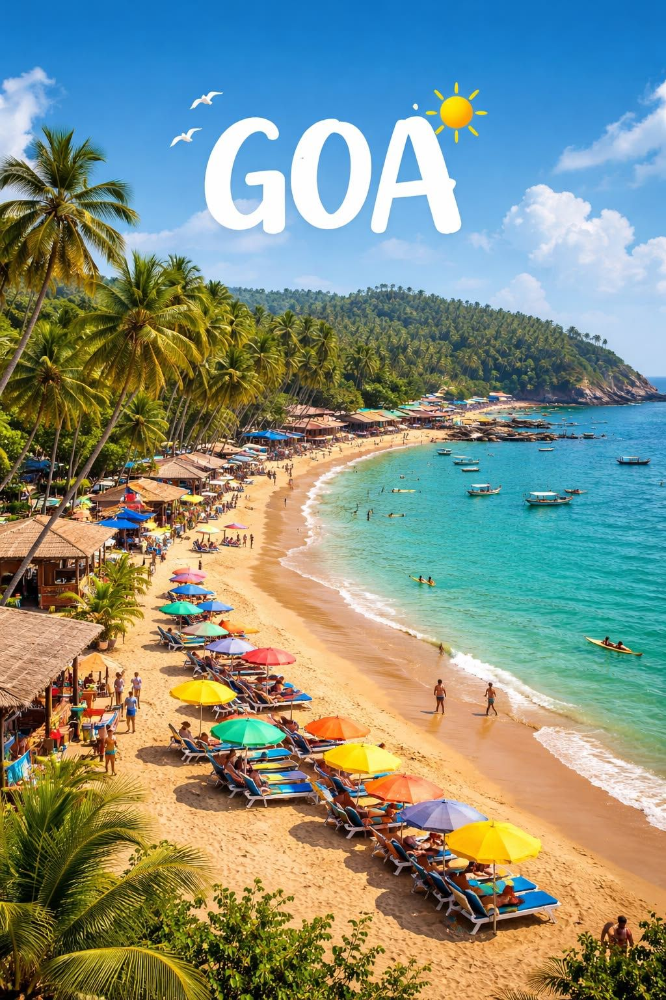
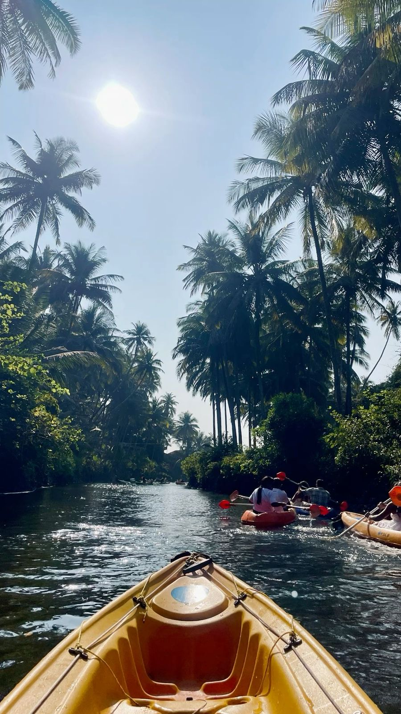
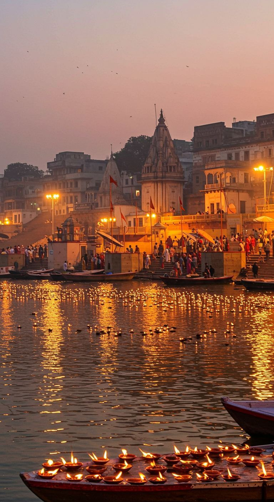
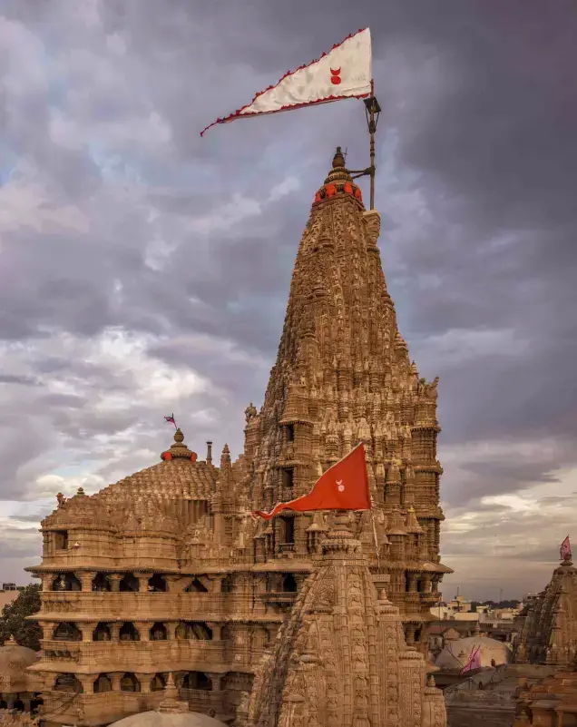
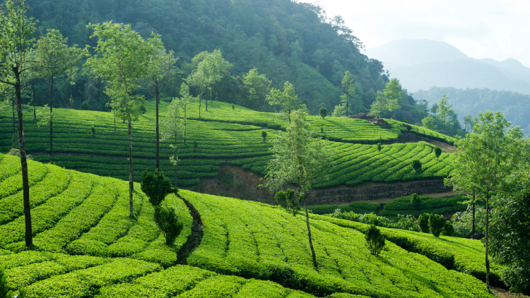
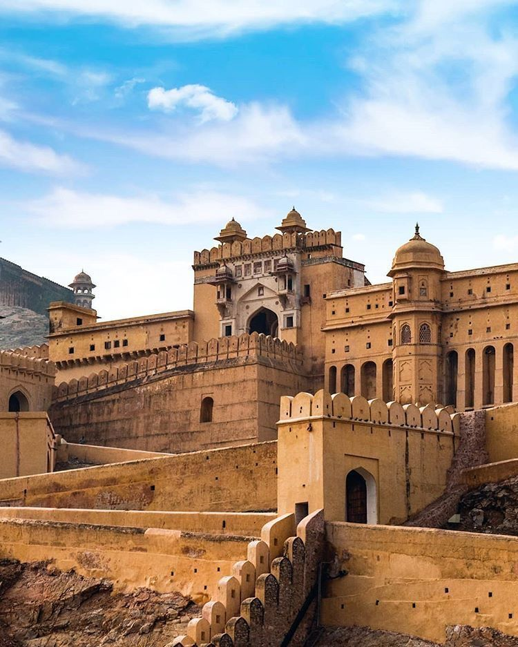
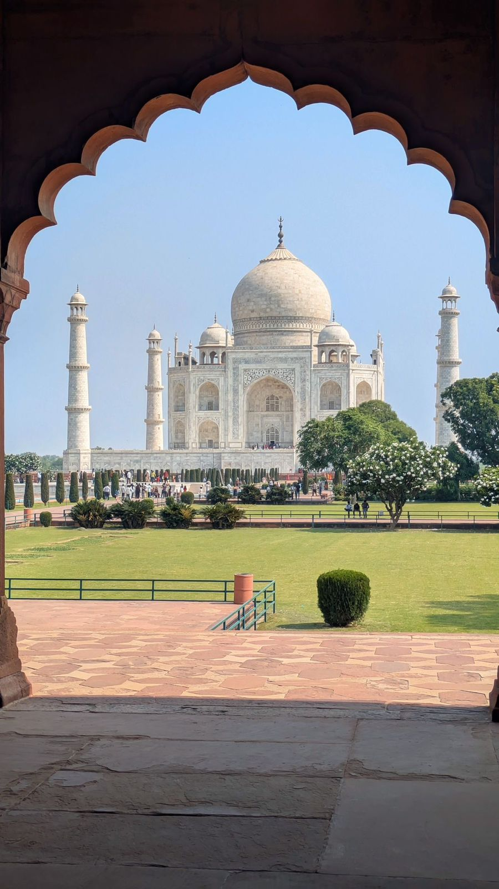
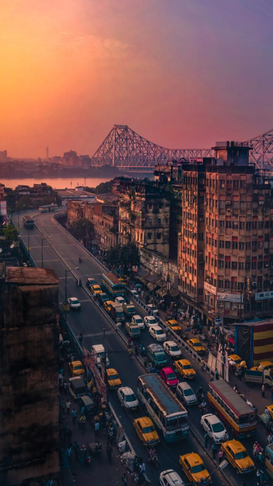
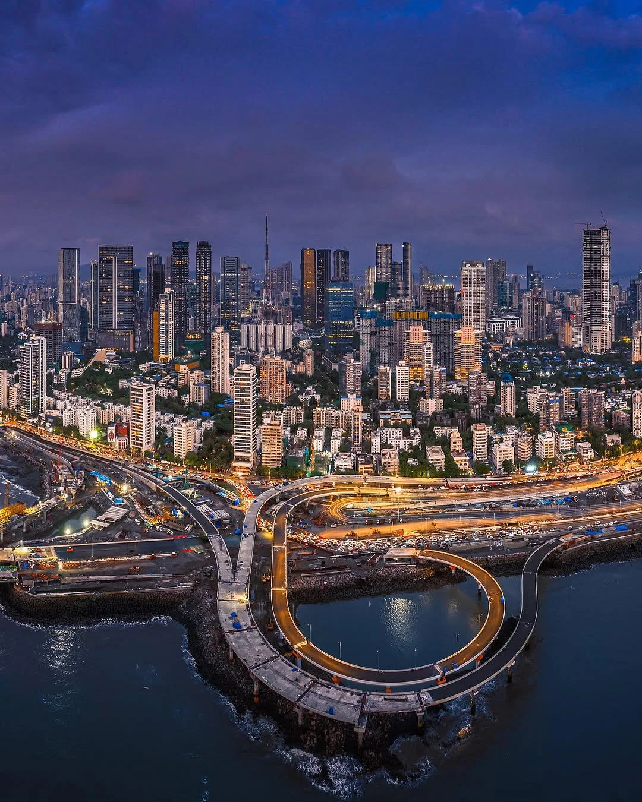

India Unveiled
─── A Tapestry of Travel & Tradition ───

Himachal Pradesh
Bir Billing (Kangra),
Himachal Pradesh
Dharamshala Airport
The Bir-Billing area is a popular site for paragliding; both Indians and visitors come
from all over the
world.The flying season is in September and October, with some flying in November. The
village
hosts international competitions and events.
Adventure • -2–22°C

Ladakh
Leh, Ladakh
Kushok Bakula
Rimpochee Airport
Leh-Ladakh is known for its stunning mountains and landscapes.
It is a dream destination for bikers and adventure lovers.
Pangong Lake and Nubra Valley are major attractions.
The region offers a unique high-altitude desert experience.
Adventure • -5–20°C

Uttarakhand
Rishikesh, Uttarakhand
Jolly Grant Airport
Rishikesh is known as the Yoga Capital of the World.
It is located on the banks of the Ganga River.
The city offers adventure activities like river rafting.
It is also famous for meditation and spiritual retreats.
Adventure • 18–30°C

Goa
Goa
Goa International
Airport
Goa is India’s most famous beach destination.
It is known for nightlife, water sports, and vibrant culture.
Visitors can enjoy beaches, parties, and seafood.
Portuguese architecture adds unique charm to the city.
Beach • 25–33°C

Karnataka
Gokarna, Karnataka
Dabolim Airport (Goa)
Gokarna is a peaceful coastal town known for its clean beaches.
It is less crowded compared to Goa and perfect for relaxation.
The town also has spiritual importance with ancient temples.
Beach trekking is a popular activity here.
Beach • 25–32°C

Tamil Nadu
Dhanushkodi, Tamil Nadu
Madurai Airport
Dhanushkodi, located on Pamban Island in Tamil Nadu, is a captivating "ghost town"
famous for its
pristine beaches, where the Bay of Bengal meets the Indian Ocean at Arichal Munai. Key
beach spots
include the scenic Dhanushkodi Beach Point. the historic abandoned town ruins.
Beach • 25–38°C

Uttar Pradesh
Varanasi, Uttar Pradesh
Lal Bahadur Shastri
Airport
Varanasi is one of the oldest living cities in the world.
It is located on the banks of the sacred Ganga River.
The city is famous for its Ganga Aarti and ghats.
It holds deep spiritual and cultural importance in India.
Spiritual • 20–35°C

Andhra Pradesh
Tirupati, Andhra Pradesh
Tirupati Airport
Tirupati is one of the most visited pilgrimage destinations in India.
It is home to the famous Tirumala Venkateswara Temple.
Millions of devotees visit every year for blessings.
The temple is known for its spiritual significance and rituals.
Spiritual • 20–36°C

Gujarat
Dwarkadhish, Gujarat
Jamnagar Airport (JGA)
The Dwarkadhish temple, also known as the Jagat Mandir and occasionally spelled
Dwarakadheesh, is a
Hindu temple dedicated to Krishna, who is worshiped in the temple by the name
Dwarkadhish
(Dvārakādhīśa), or 'King of Dwarka'. The temple is located at Dwarka city of Gujarat,
India.
Spiritual • 25–38°C

Meghalaya
Seven Sisters Waterfall,
Meghalaya
Guwahati Airport (GAU)
The Seven Sisters Waterfall in Cherrapunji, Meghalaya, is a stunning 315-meter
tall, seven-segmented cascade in the East Khasi Hills.visit during the monsoon
(June-September),
70-meter wide waterfall falls over limestone cliffs and is best viewed from the Mawsmai
area or Eco Park.
Nature • 28–35°C

Kerala
Munnar, Kerala
Cochin International
Airport
Munnar, a premier hill station in Kerala's Idukki district, is renowned for its vast,
rolling tea
plantations, cool climate, and misty, scenic beauty located 1,600 meters up in the
Western Ghats. Famous
attractions include Eravikulam National Park, Mattupetty Dam, and Top Station.
Nature • 28–35°C

Rajasthan
Jaipur, Rajasthan
Jaipur International
Airport
Jaipur, known as the Pink City, is famous for its royal palaces, forts, and vibrant
culture.
The city showcases stunning architecture like Hawa Mahal and Amber Fort.
Visitors can explore colorful bazaars filled with handicrafts and jewelry.
Heritage • 25–40°C

Mausoleum in Agra
Taj Mahal, Mausoleum in
Agra
Agra Airport
The Taj Mahal is an ivory-white marble mausoleum on the right bank of the river Yamuna
in Agra, Uttar
Pradesh, India. It was commissioned in 1631 by the fifth Mughal emperor, Shah Jahan, to
house the tomb
of his beloved wife, Mumtaz Mahal; it also houses the tomb of Shah Jahan himself.
Heritage • 25–40°C

West Bengal
Kolkota, West Bengal
Netaji Subhash Chandra
Bose
International Airport
Kolkata (formerly Calcutta) is the capital of India's West Bengal state. Founded as an
East India
Company trading post, it was India's capital under the British Raj from 1773–1911. Today
it’s known for
its grand colonial architecture, art galleries and cultural festivals.
City - 24–30°C

Maharashtra
Mumbai, Maharashtra
Chhatrapati Shivaji
Maharaj
International Airport
Mumbai (formerly called Bombay) is a densely populated city on India’s west coast. A
financial center,
it's India's largest city. On the Mumbai Harbour waterfront stands the iconic Gateway of
India stone
arch, built by the British Raj in 1924.
City • 15–25°C